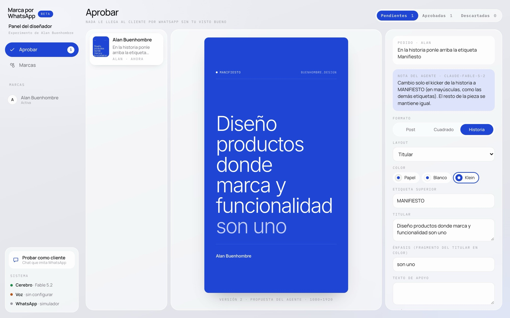

Product & AI · Experimento personal · En desarrollo
Marca por WhatsApp
El cliente pide piezas de su marca por WhatsApp, con texto o nota de voz. La IA las arma con las guías de la marca y un diseñador las aprueba en un panel antes de que lleguen.
Claude Fable 5.2 · Node · TypeScript · Claude Code
Tipo
Experimento personal · 2026
Panel del diseñador · AprobarBeta

El cliente nunca ve este panel: solo usa WhatsApp · captura real de la beta
Cómo funciona
Dos lados: WhatsApp para el cliente, un panel para el diseñador.
01
El cliente escribe por WhatsApp
Pide un post, una historia o un anuncio, con texto o nota de voz. No instala nada ni ve ningún panel. Si falta un dato, como una fecha o una cifra, el agente pregunta en vez de inventarlo.
02
La IA propone
Claude Fable 5.2 lee el pedido, escribe el texto y elige formato, layout, color y foto dentro de las guías de la marca. Una plantilla compone la pieza con la tipografía y el logo exactos.
03
El diseñador aprueba
La propuesta llega a su panel. Ahí ajusta el texto o el color, pide otra versión o la descarta. Solo cuando la aprueba, la pieza le llega al cliente por WhatsApp.
Probar como clienteHerramienta de desarrollo que imita WhatsApp para probar el flujo completo antes de conectar un número real.
Lo que construí
Cuatro piezas para que la IA respete la marca.
La marca como ficha de reglas. Colores en combinaciones cerradas, tipografías, tono, palabras prohibidas, firmas y fotos descritas. El agente solo usa lo que diga la ficha.
Alta de marca con IA. El diseñador sube logos, tipografías, piezas publicadas y fotos, y la IA propone la ficha y lista lo que tuvo que suponer. Los colores se miden en los archivos, no se estiman a ojo.
Plantillas, no imágenes generadas. Seis layouts en tres formatos: post, cuadrado e historia. El titular se ajusta solo al espacio, así la tipografía y el logo salen siempre exactos.
Aprobación humana. Cada ajuste queda como versión nueva, el agente deja una nota para quien revisa y nada sale sin aprobación.
La idea
La IA explora; el criterio decide qué sale.
Es un experimento personal: quiero ver si un diseñador puede atender el día a día de varias marcas sin perder el criterio. Lo probé dando de alta una marca real a partir de su material: la IA propuso la ficha en unos tres minutos, eligió la foto correcta para cada pedido y evitó las palabras que la marca no usa.
Estado
En desarrollo: qué funciona y qué falta.
Funciona: pedidos por texto, propuestas con Claude Fable 5.2, alta de marca con IA, panel de aprobación y entrega en el chat de prueba.
Falta: transcripción de notas de voz, conexión con un número real de WhatsApp Business y despliegue en la nube.